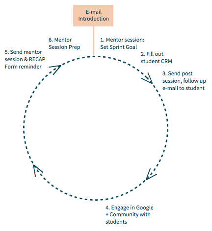

Here at Thinkful, we are laser-focused on student success. Other companies focus on producing content; we’re fans of them, and even use their content, but we’re in a different business. We don’t want to produce learning materials, we want to produce learning. We’re not satisfied with people buying our courses, we expect to provide the optimal conditions for them to actually learn. Below is our official Learning Philosophy, the guiding principles that drive all of educational decisions.
1) Real learning is fundamentally human.
2) Real learning happens when education is relevant to students' interests and is project-based.
3) Real learning requires a significant personal commitment and subsequently a supportive community.
Below are 8 tips on how to build an incredible first impression that will inspire students.
1. Skip the small talk.
Just do it. It's awkward, wastes time, and doesn't accomplish much. Later, we'll share better rapport building strategies.
2. Follow the 66.667% Rule.
About 2/3rds, 20 minutes of the 30 minute session, or 66.667% of the session should consist of the student speaking. This keeps the students engaged, and gives you the opportunity to show you care about her goals. This foundation of care is essential to build the rapport necessary for true learning (and much better strategy than “small talk”). To keep meaningful conversation going, have core questions and clarifying questions prepared.
3. Be a Mickey Goldmill.
There’s nothing wrong with being nice, but sometimes “being nice” is simply a form of selfish hopelessness. You may know EXACTLY what a student needs to do to reach their potential. Maybe its a stern conversation about devoting more time or about following through with feedback. But that conversation is 4 tricky -- it’s hard. Its easier to give up hope and just be polite. This isn’t good mentorship.
Learning is a struggle, don’t take the easy way out. Be a Mickey Goldmill -- bold and direct, full of hope, and relentlessly coaching until a student reaches their full potential.
4. Understand their secret dreams.
Our students aren’t learning to program for the hell of it -- they’re learning because it enables a dream. They want to work for themselves, have more time to travel, work at an ambitious startup, or simply make more money. Whatever the dream is, you want to know it. Use your Jedi question-asking skills to draw this information out, and be excited about her dream. Supporting your student will have a huge, positive impact on her learning if the student follows up with committed skill building
5. Work with students to break their "dream" down to measurable, specific "objectives".
It’s not clear how to start achieving a huge dream like “finding a job at a startup”. Before landing a job you need to demonstrate certain skills. Those skills are made up of sub-skills and objectives. Help your student create a clear, measurable path to achieving her dream. In this phase, its essential that you share how her work with Thinkful fits within the journey to achieving her dream. More o"en than not, Thinkful is an early step towards building the foundational skills she needs to navigate the path on her own.
6. Set high, but necessary expectations.
No matter how motivated she is, how much she pays, or what courses she’s signed up for, your student will not be able to achieve her goals unless she creates the conditions for rigorous learning.
Here are a few tips to emphasize:
7. Routine and Procedure are your best friends.
Set routines and procedures from day 1.
It would be GREAT if we had all the time in the world to create mind-blowingly fun mentor session plans for each of our students. The reality is that most of us have little to no time to prepare for each session. Instead, we rely on our accumulated experience to get us through.
Routine remedies this! By having an established procedure for running the mentor session, your student engages with a high quality session every single time without you thinking much about it. Make sure to firmly set routines into motion from the first session.
8. Be short and sweet when talking about yourself. If possible, show, don't tell.
You only need two sentences to introduce your background. You’d be surprised how quickly students will pick it up from there with questions. If available, share your Linkedin profile, GitHub account, or online portfolio.
Good mentorship extends beyond just the mentor session itself. Let's take a look at all that takes place to provide meaningful learning support.
Intro E-mail:
The first e-mail you send a student is a great way to set the tone for your mentorship.
1. Mentor Session: Set Sprint Goal
Mentor sessions are 30 minutes, once a week per student. At the end of each session it’s important that you set a Weekly Sprint Goal -- a short term goal that the student is expected to accomplish in the upcoming week. This provides a weekly focus and clear steps to follow a"er a session
2. Fill Out Student CRM
Immediately after each session, fill out your student's CRM.
3. Send Follow Up E-mail
After each session, write a follow up e-mail summarizing what was covered in the session, the student’s weekly focus, and their Spring Goal.
4. Engage in Google+ Community With Other Students
Set aside time each week to explore our student Google+ communities and engage with students about their work and the questions they have.
5. Send Session and RECAP Form Reminder
In GMAIL, automate an e-mail to be sent one day before each mentor session reminding students of their upcoming mentor session and to submit their RECAP Form.
6. Mentor Session Prep
Take 10 minutes before the mentor session to review your student’s RECAP Form and any work they’ve done in the past week.
1. Indirect Praise.
It's easy to think that excessive direct praise like, “wow, you did an amazing job” or “you are so good at this” will increase student outcomes. The opposite is true.
These type of value judgements transform a coaching session into a time of evaluation and over time students become insensitive to the praise. Instead, provide indirect positive feedback by objectively stating how hard a problem was and acknowledge the students sufficient tackling of the problem. The student will deduce the praise themselves! Save direct positive feedback for those really, really special times.
2. Indirect Negative Feedback.
Avoid ever explicitly stating that your student has made a mistake. Let your students find their own errors. Provide hints by asking about specific lines of code and why they wrote it that way. Keeping working backwards until they are able to self correct.
3. Scaffolding Questions
There are different levels of questions. Lower level questions are easier and have clear, right or wrong answers. Higher level questions are harder and involve application of a variety of concepts within a real world setting. The “Scaffolding Questions” technique uses low level questions to build up to higher level questions. Don’t fall into the traps of (1) preserving student self esteem by dumbing down your questions and never challenging them or (2) or starting off with high level questions before you lay the scaffolding they need to reach an answer. Instead, start off with simple, low level, questions and build up from there.
4. Code Tour.
Many students can make something that works without understanding why it works. Asking them to “walk through” the code, explaining what each line does, lets them recognize the “why” behind each action.
5. Teach the Teacher.
Teaching is sometimes the best way to learn. Have the student teach you a concept that they learned the prior week. This will be great reinforcement and will uncover learning gaps.
6. Awesome Analogies.
Research proves that deep learning occurs when new knowledge is linked with prior knowledge. Analogies are a great way to do this. Use cars and their components to explain classes and fields, the animal kingdom to explain inheritance, shapes to explain polymorphism -- have fun with it!
7. Socratic Method.
The Socratic Method is a combination of all of the strategies above. The official definition is, “A pedagogical technique in which a teacher does not give information directly but instead asks a series of questions, with the result that the student comes either to the desired knowledge by answering the questions or to a deeper awareness of the limits of knowledge.” A mentor accomplishes this by integrating all of the techniques above to achieve a clear learning goal.
My student wants to skip this session.
Before anything else, use all of your power to make the meeting happen. As the course work gets tougher, and life gets busier, engagement with mentors become more essential for students. You can ask them to commit to meeting for only 10 minutes even if they have no material prepared or lure them by sharing information that requires no preparation (like introducing developer tools). Whatever you do, make that meeting happen.
When you do have the meeting, simply follow your routine.
More broadly, begin to engrain in your student that your sole existence is to help them get out of tough situations. Don’t let them run away from hard parts of the curriculum — the benefits of learning to program is totally worth it. If they claim that the issue is external and that they are too busy, remind them of your belief in them. This may be the time to break the rules and provide strong, DIRECT feedback.
My student didn't do any work this week. At all.
Use scaffolding and the Socratic Method to work with student on their current spot in the course. There will be times where you may have to teach a concept explicitly.
I haven't seen my student for 2 weeks.
If you just can’t connect with a student and they miss two consecutive meetings with you, let us know as soon as possible. We’ll follow up with them to see if there’s anything we can do to better offer support them and remind them of their commitment and goals.
What should I do if a student wants to go way off the curriculum?
Hmmm. It depends.
From our experience, the course material is foundational for building other skills off. The concepts that students o"en want to cover outside of the curriculum usually require a strong grasp of curriculum content to excel at. Students don’t want to replace curriculum content, they want to supplement it.
If students persist, assess where the students are at. If they have a strong enough grasp of the fundamental concepts to engage the side project, feel free to do it. If they haven’t gained the necessary foundational skills to accomplish their project ideas — walk them through exactly why veering away from the curriculum is a bad idea.